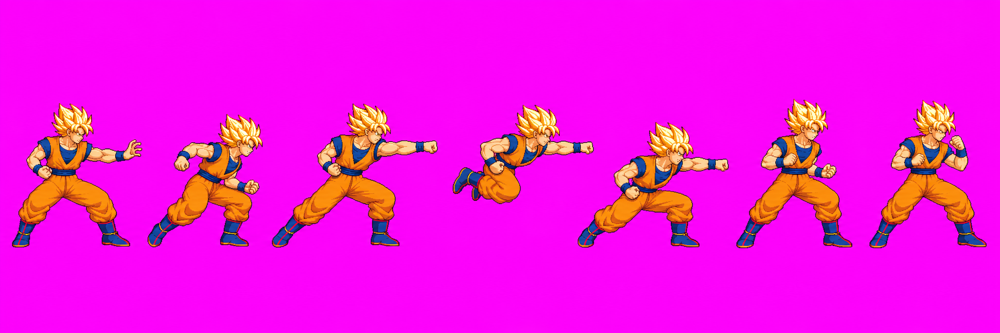
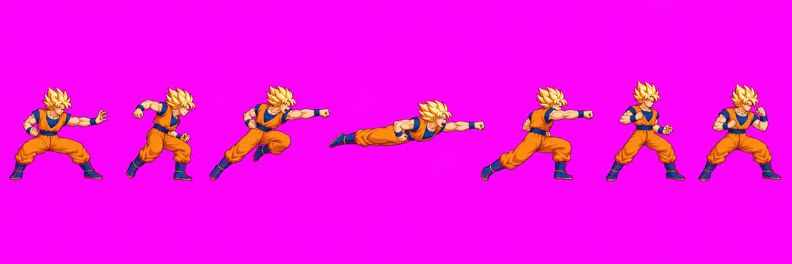
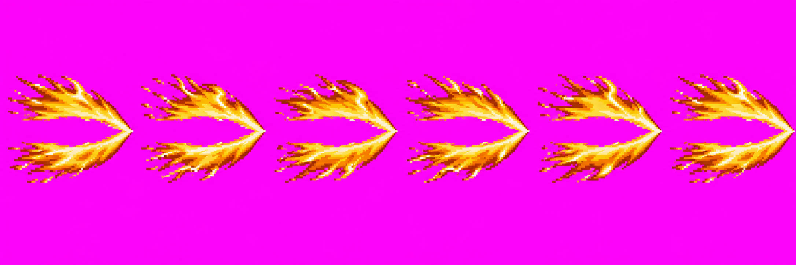
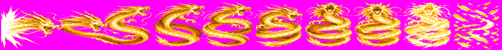
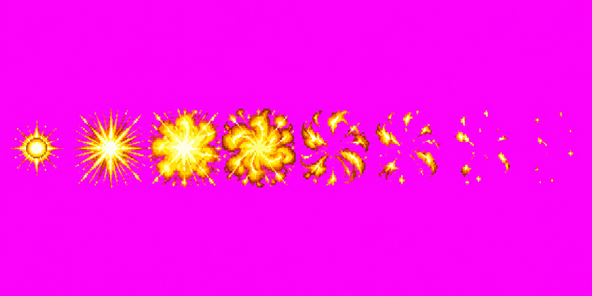

Goku Skills Batch 2: Dragon Fist
Three effect v01 drawings are user-approved; `specialForward v01` is rejected and preserved. v02 used the full two-call budget and remains on technical hold pending direction from the user.
B1 · Dragon Fist forward strip · v02 · technical hold

The flight folds its trailing legs and reads more compact in the raw preview. Technical HOLD: candidate pack did not write an atlas: figure segmentation cuts across f3/f4; f2 clips right by 1px; f3 reaches the 4px margin. The known Goku head probe is unusable. Compactness has not been measured at bodyHeight 232 or certified within 236px. Source layout is 2172×724 and background/pixel style are not verified. The two-call generation budget is exhausted.
B1 · Dragon Fist forward strip · v01 · rejected

The user rejected this drawing via Claude relay goku-skills #5: keep the poses, redraw the flight compactly. At bodyHeight 232, f3 is ~330 px and clips 49 px left + 23 px right; f2 clips 23 px right. v01 remains in the gallery as history.
A7 · Golden flight envelope · v01

Technical HOLD: near-magenta background, 140,599 off-palette colors; source is 2172×724.
A8 · Golden dragon · v01

Technical HOLD: concurrent duplicate generation collided on the same v01 path. Four total calls were used across both workers, exceeding the 3-call cap. The current 10-cell image is cropped, resized and quantized from one source; its coil obscures the requested open center. See the [attempt inventory](../../../art/characters/goku/production/skills-revamp-batch2-candidates.md) for source provenance and the overwritten file report.
A9 · Golden impact burst · v01

Technical HOLD: near-magenta background, 100,395 off-palette colors; source is 1774×887.
Review status
dragonFistAura, dragonFistDragon and dragonFistBurst v01 are approved as drawings via Claude relay goku-skills #4. specialForward v01 is rejected; v02 is the new candidate. A decision is needed: proceed with Claude's bodyHeight/frame-offset evaluation of v02 despite the technical hold, or reject it and pause. Approval does not clear the holds above. The A8 provenance collision is disclosed and cannot be repaired within this batch's generation budget.